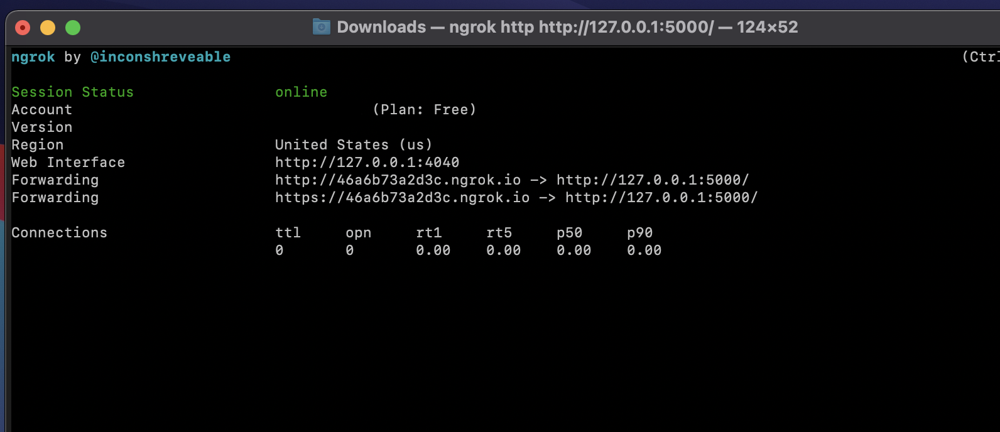

View the Project on GitHub IBM/customized-voice-text-bot-for-whatsapp-telegram
Please follow these following subsections in order, to run the Telegram Bot app locally.
To locally run the app successfully, please ensure that you have these components ready:
ngrok is a third-party software that can be used to expose "local servers to the public internet over secure tunnels" (ngrok documentation). Basically, ngrok provides a random public url that can forward requests to a local host.
After acquiring the necessary components and cloning our GitHub repository, you would need to create a Python 3 virtual environment (using virtualenv for example), and install the dependencies. Below you can see how to do these steps:
$ python3 -m venv <name_of_virtualenv> $ source <venv>/bin/activateC:\> <venv>\Scripts\activate.batPS C:\> <venv>\Scripts\Activate.ps1$ pip install -r requirements_windows_local.txt$ python3 -m pip install -r requirements.txtIn the src directory, you should also create a .env file. This will store the API keys and the code will search for them.
$ touch .env
$ type nul > your_file.txt
In the .env file, you can store API keys with these exact names. We do this to protect sensitive information, namely, API keys and other IDs. STT, TTS, Watson Assistant, COS and Cloudant API keys can be found on the IBM Cloud website (by going to Resource List and then opening each service). For the Watson Assistant ID, you first have to launch Watson Assistant (this can be done from the resource list) and create an assistant. After that, under Assistant Settings the assistant ID will be there.
These are the API keys that you will need to run the app:
The following image is an example of how the .env file should be formatted - without the variables values, of course:
First, run the command for your respective OS on the command line (in the folder ngrok were installed):
$ ./ngrok http 8080
$ ngrok http 8080
After this, an ngrok interface, similar to this, should appear:
There would be two "Forwarding" sections of the interface - you can copy the https://____.ngrok.io/ url, and store this as TELEGRAM_WEBHOOK_URL in your .env file.
After this is done you are prepared to run the app and send messages.
It is time to run the application. In the src/ folder:
$ python3 telegram_bot.py Congratulations! The application is ready to receive requests. You now should be able to interact with the bot on Telegram. Yeeey!
You can monitor bot activity through Cloudant database and access the media files sent and received by the bot in the Cloud Object Storage bucket you create.
Of course, there should also be a working Watson Assistant dialog skill attached to your Watson Assistant assistant (that correlates with WATSON_ASSISTANT_ID) in order for you to receive sensible responses from the app.
The code has try-except blocks in many places, so as to catch specific errors from the services. Most errors should produce a debug output within the terminal.